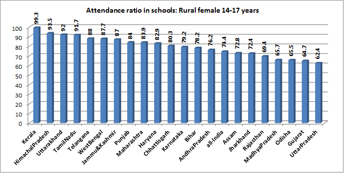

Education of Indian Women
India has made significant progress in women's education, but challenges persist. Education plays a vital role in the overall development of society, and empowering women through education is key to fostering gender equality, economic growth, and social progress.
Access to quality education for women in India has expanded over the years, with increased enrollment and literacy rates. Efforts by the government, NGOs, and various stakeholders have led to positive changes, but there are still areas that require attention and improvement.
Gender disparities in education persist, particularly in rural areas and marginalized communities. Socio-economic factors, cultural norms, early marriage, and limited access to educational resources hinder girls' education.
However, educating women has numerous benefits for individuals, families, and society as a whole. Educated women are more likely to participate in the workforce, make informed decisions about their health and well-being, and contribute to the socio-economic development of their communities.
Education Statistics
Here are some statistics on education levels in India:

The average education level in India shows disparities between males and females, as well as variations across states:
- Male education level: 75%
- Female education level: 65%
- State average education level: 70%
Effective Education Models
Several countries have implemented successful models to improve overall education levels. Examples include:
Finland
Finland's education system is widely recognized as one of the most successful in the world. The country has achieved outstanding results in education through several key elements:
- Egalitarian Approach: Finland's education system is built on the principles of equality and inclusivity. There is a strong belief that every child has the right to high-quality education, regardless of their socioeconomic background or abilities.
- Teacher Professionalism: Finnish teachers are highly respected professionals. They undergo rigorous training, including advanced degrees, and are given a high degree of autonomy in the classroom. This trust in teachers' expertise allows them to tailor their instruction to meet the individual needs of students.
- Child-Centric Education: The Finnish education system focuses on the holistic development of students. There is a strong emphasis on promoting well-being, creativity, critical thinking, and problem-solving skills. Students have ample time for play, self-directed learning, and exploration.
- Minimal Standardized Testing: Finland has significantly reduced the emphasis on standardized testing. Instead, the focus is on continuous assessment, formative feedback, and personalized support for students. This approach helps foster a love for learning and reduces stress levels among students.
- Collaborative Learning Environment: Finnish classrooms encourage collaboration, teamwork, and active participation. Students work together on projects, engage in discussions, and learn from each other. This fosters a sense of community and promotes social skills alongside academic learning.
The Finnish education model has had a profound impact, leading to exceptional education outcomes. Finland consistently performs well in international assessments and rankings, demonstrating the effectiveness of their student-centered approach and investment in teacher professionalism.
South Korea
South Korea's education system has undergone a remarkable transformation, leading to significant improvements in education outcomes. The country has achieved a high level of education by implementing several key strategies:
- Commitment to Education: South Korea places a strong emphasis on education, recognizing it as a key driver for national development. The government has made education a top priority, investing substantial resources and implementing comprehensive policies.
- Rigorous Academic Standards: The education system in South Korea follows a rigorous curriculum with high academic standards. Students are challenged to excel in core subjects such as math, science, and language arts.
- Quality Teachers: South Korea has a strong emphasis on recruiting and training highly qualified teachers. Teachers go through rigorous selection processes and receive continuous professional development to ensure they are equipped with the necessary skills and knowledge.
- Extended Study Hours: South Korean students have longer school hours and often participate in additional after-school classes known as "hagwons." This dedication to extended study hours helps students gain a competitive edge and achieve better academic performance.
- Focus on STEM Education: South Korea places a strong emphasis on Science, Technology, Engineering, and Mathematics (STEM) education. They recognize the importance of these fields for future economic growth and provide specialized programs and resources to foster interest and expertise in these areas.
As a result of these efforts, South Korea has witnessed a significant improvement in education outcomes. The country consistently ranks highly in international assessments such as the Programme for International Student Assessment (PISA), showcasing the effectiveness of their education system.
Canada
Canada has developed an education system that is known for its inclusivity, quality, and focus on student well-being. The country's education model encompasses several key aspects:
- Universal Access: Canada ensures universal access to education, with publicly funded schools available to all students. This commitment to inclusivity promotes equal opportunities for learning and success.
- Bilingual Education: In many regions of Canada, there is a strong emphasis on bilingual education, with students learning both English and French. This linguistic diversity enhances cultural understanding and provides students with additional language skills.
- High-Quality Teachers: Canada prioritizes the recruitment and training of high-quality teachers. Teachers undergo rigorous education programs and continuous professional development to enhance their instructional skills and knowledge.
- Student-Centered Approach: Canadian classrooms often adopt a student-centered approach, focusing on personalized learning and student engagement. There is an emphasis on fostering critical thinking, creativity, and problem-solving skills.
- Strong Support Systems: Canada places a strong emphasis on providing support systems for students, including guidance counselors, special education services, and resources for diverse learning needs. This ensures that all students have the opportunity to thrive academically and emotionally.
The Canadian education model has shown positive outcomes, with students consistently performing well in international assessments. The focus on inclusivity, high-quality teachers, and student-centered approaches has contributed to Canada's reputation for educational excellence.
By learning from these successful models, India can make further strides in improving education levels for all.